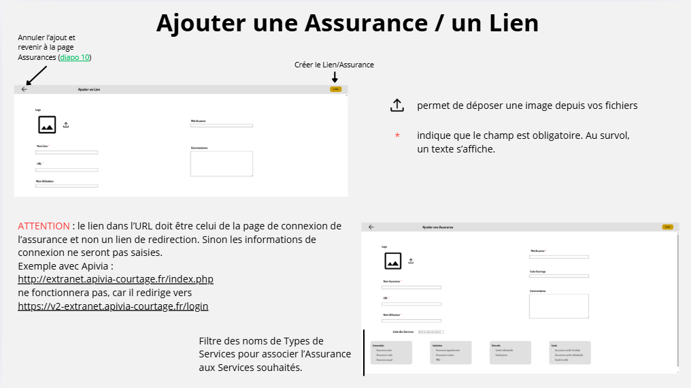

Jolan BERTIN S4A1
jolan.bertin@edu.univ-fcomte.frSavoir-faire suivi de projet
Cette partie permet d'expliquer comment le projet à été encadré tout au long de sa réalisation.
Mettre en place des tutoriels pour faciliter la prise en main des outils pour les utilisateurs

Savoir-faire élémentaire : Créer des fonctionnalités pertinentes aux besoins utilisateurs et S'auto-former sur de nouveaux langages et outils .

Trace 17 : Extrait du tutoriel de l'application web concernant l'ajout d'une assuranceBien que je présente les différents projets à l'équipe avant de les mettre en place et pour m'assurer que toutes les fonctionnalités auxquels ils doivent répondre sont disponibles, je met en place des guides d'utilisation pour chacun de mes travaux. En effet, une simple présentation ne suffit pas à tout intégré et sachant que l'équipe accueil de nombreux stagiaires, ceux-ci pourront être amené à les utiliser à leurs tour sans démonstration .
Concernant Calendly, le calendrier en ligne qui facilite la prise de rendez-vous clients, la première étape était tout de me former moi-même sur ce nouvel outil . En effet, je devais connaitre les différentes options offertes par la version gratuite de Calendly et comment les utiliser. Puis, j'ai dresser différents tutos concis pour les différentes actions (connecter son agenda avec celui de Calendly, modifier ses horaires de disponibilité, créer un rendez-vous, ...).
Pour l'application web de mon sujet de stage, puique j'ai tout créé sans plan, j'ai créé un Canva (dont la page de la trace 17 provient : voir le Canva) afin de pouvoir facielement naviguer entre les pages du diaporama et que celui-ci soit très visuel (captures d'écrans, différentes couleurs utilisées et expliqué dans une légende, ...).
Après m'être assuré qu'il soient parfaitement compris, je partage donc ces guides d'utilisation avec les utilisateurs des outils concernés.